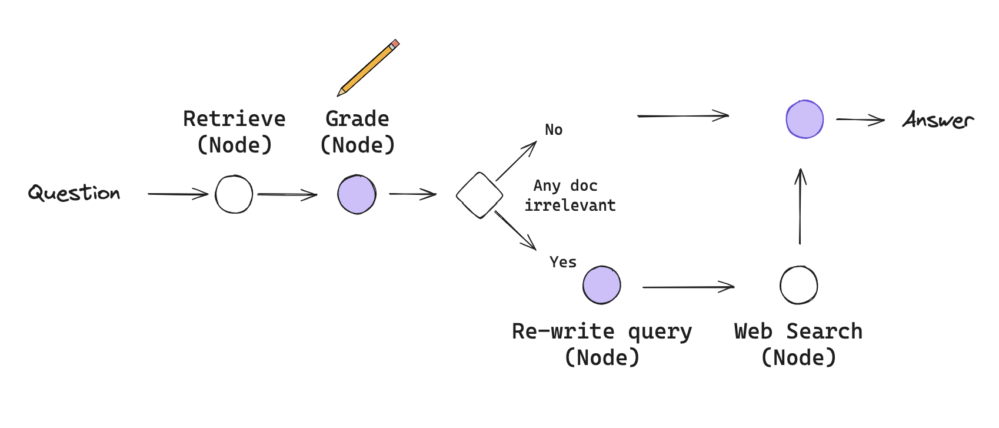
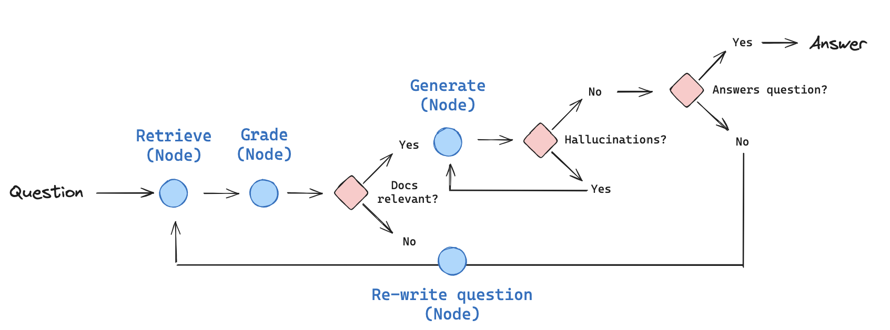

Cognitive Architecture [2] #
- Cognitive architectures for RAG [1]
CRAG #
论文 #
Corrective Retrieval Augmented Generation Figure 2
实现[10] #
Corrective-RAG (CRAG) is a strategy for RAG that incorporates self-reflection / self-grading on retrieved documents.
In the paper here, a few steps are taken:
- If at least one document exceeds the threshold for relevance, then it proceeds to generation
- Before generation, it performs knowledge refinement
- This partitions the document into “knowledge strips”
- It grades each strip, and filters our irrelevant ones
- If all documents fall below the relevance threshold or if the grader is unsure, then the framework seeks an additional datasource
- It will use web search to supplement retrieval
We will implement some of these ideas from scratch using LangGraph:
- Let’s skip the knowledge refinement phase as a first pass. This can be added back as a node, if desired.
- If any documents are irrelevant, let’s opt to supplement retrieval with web search.
- We’ll use Tavily Search for web search.
- Let’s use query re-writing to optimize the query for web search.

Self-RAG #
论文 #
SELF-RAG: LEARNING TO RETRIEVE, GENERATE, AND CRITIQUE THROUGH SELF-REFLECTION Figure 1
原理 [20] #
Self-RAG 则是更加主动和智能的实现方式，主要步骤概括如下：
- 判断是否需要额外检索事实性信息（retrieve on demand），仅当有需要时才召回
- 平行处理每个片段：生产prompt+一个片段的生成结果
- 使用反思字段(Reflection tokens)，检查输出是否相关，选择最符合需要的片段；
- 再重复检索
- 生成结果会引用相关片段，以及输出结果是否符合该片段，便于查证事实。
实现[21] #
Self-RAG is a strategy for RAG that incorporates self-reflection / self-grading on retrieved documents and generations.
In the paper, a few decisions are made:
- Should I retrieve from retriever,
R-
- Input:
x (question)ORx (question),y (generation) - Decides when to retrieve
Dchunks withR - Output:
yes, no, continue
- Are the retrieved passages
Drelevant to the questionx-
- Input: (
x (question),d (chunk)) fordinD dprovides useful information to solvex- Output:
relevant, irrelevant
- Are the LLM generation from each chunk in
Dis relevant to the chunk (hallucinations, etc) -
- Input:
x (question),d (chunk),y (generation)fordinD - All of the verification-worthy statements in
y (generation)are supported byd - Output:
{fully supported, partially supported, no support
- The LLM generation from each chunk in
Dis a useful response tox (question)-
- Input:
x (question),y (generation)fordinD y (generation)is a useful response tox (question).- Output:
{5, 4, 3, 2, 1}
We will implement some of these ideas from scratch using LangGraph.

参考 #
1xx. 写的太通透了！大模型自省式 RAG 与 LangGraph 的实践！
CRAG #
- Corrective RAG (CRAG) langgraph git
1xx. 【社区第十三讲】 老刘说NLP线上交流
Self-RAG #
-
Self-RAG langGraph git